KUNI OFFICE ホームページ
編集マニュアル
管理画面で、文章・写真・実績をその場で直す
ホームページの直し方は、この3ステップだけです
- iPhone やパソコンで管理画面を開き、アクセスキーでログインする
https://playmark0227-svg.github.io/kunioffice/admin/ - 直したい文字や写真をタップして、その場で書き換える
- 「公開する」を押す → 約1分でホームページに反映されます
もくじ
第1部管理画面で編集する（ふだんはこちら）
第2部管理画面が使えないとき（ファイルで直す方法）
- フォルダの中身
- 写真を差し替える（写真一覧つき）
- 文章を直す
- 実績を追加・削除する
- パソコンで確認する
- ホームページに反映（公開）する
- お問い合わせフォームについて
- オンラインショップ（若葉のしずく）
- うまくいかないとき（ファイルで直したとき）
第1部管理画面で編集する（ふだんはこちら）
1管理画面で編集する（いちばん簡単）
管理画面を使うと、iPhone やパソコンのブラウザでホームページを見たまま、文字や写真を直せます。ファイルの名前やタグを気にする必要はありません。直したら「公開する」を押すだけで、約1分後にホームページに反映されます。
用意するもの
- iPhone（Safari）、またはパソコン（Chrome・Edge・Safari など）
- ViFight から受け取ったアクセスキー（
github_pat_で始まる長い文字列）
はじめに済ませておきたいこと
1-1管理画面を開く
管理画面のアドレス（URL）：
https://playmark0227-svg.github.io/kunioffice/admin/
すぐ開けるように、最初に1回だけ登録しておくと便利です。
iPhone：ホーム画面に追加
- Safari で上のアドレスを開きます。
- 共有ボタン（四角から上向きの矢印が出ているマーク。見当たらないときは「…」を押すと出てきます）を押します。
- 「ホーム画面に追加」→「追加」を押します。
ホーム画面にアイコンができ、次からはそれを押すだけで開けます。
パソコン：ブックマーク
管理画面を開いた状態で Ctrl + D（Mac は ⌘ + D）を押すと、ブックマーク（お気に入り）に登録できます。
管理画面は検索しても出てきません（検索エンジンに載らないようにしてあります）。ホームページのメニューにもリンクはありません。このマニュアルも iPhone で見られます：https://playmark0227-svg.github.io/kunioffice/manual/
1-2ログインする
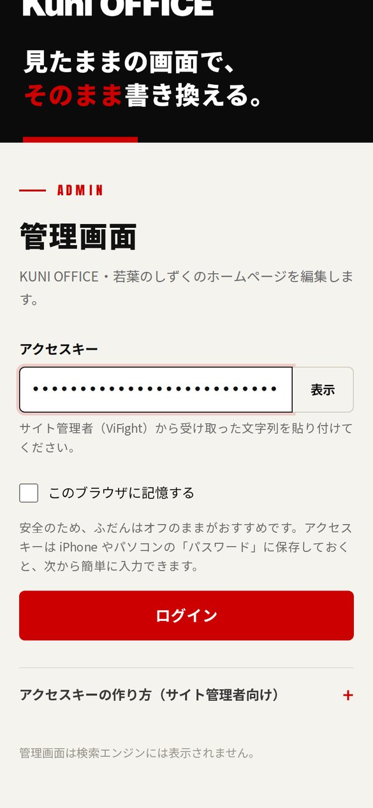
- 「アクセスキー」の欄を押し、ViFight から受け取ったアクセスキーを入力（貼り付け）します。「表示」を押すと、入力した文字を確かめられます。
- 「ログイン」を押します。
- はじめてのときは「使い方」が出ます。読んだら「はじめる」を押します（あとから「≡」→「使い方」でいつでも見られます）。
アクセスキーは iPhone に覚えさせるのがおすすめ
ログインしたときに「パスワードを保存しますか？」と聞かれたら「保存」を押してください。次からは、アクセスキーの欄を押すとキーボードの上に候補が出て、選ぶだけで入力できます。
「このブラウザに記憶する」は、安全のためオフのままがおすすめです。
アクセスキーは「お店の鍵」と同じです
この文字列があれば、だれでもホームページを書き換えられます。人に見せたり、メールや LINE で送ったりしないでください。iPhone をなくしたときは、すぐに ViFight へご連絡ください（そのアクセスキーを使えなくします）。
1-3画面の見方
ログインすると、ホームページがそのままの見た目で表示されます。いちばん上の黒い帯で、ページの切り替えや公開をします。
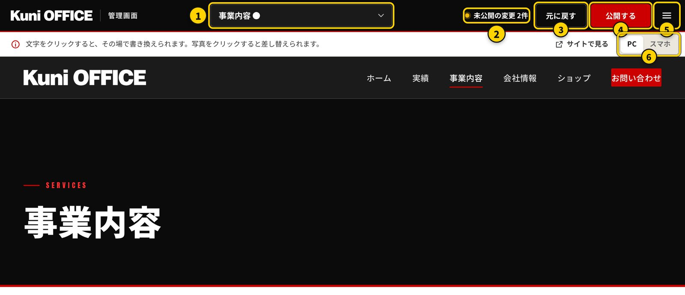
- 1ページ選択：編集するページを選びます。KUNI OFFICE の5ページと、ショップ（若葉のしずく）の4ページを選べます。まだ公開していない変更があるページには「●」が付きます。
- 2未公開の変更：まだホームページに出していない変更の数です。
- 3元に戻す：いま表示しているページの、まだ公開していない変更をすべて取り消します。
- 4公開する：変更をホームページに反映します（1-9）。
- 5メニュー（≡）：共通情報・ページ設定・公開の履歴・使い方・ログアウトなど。
- 6PC／スマホ：パソコンで、スマホで見たときの表示を確かめられます。
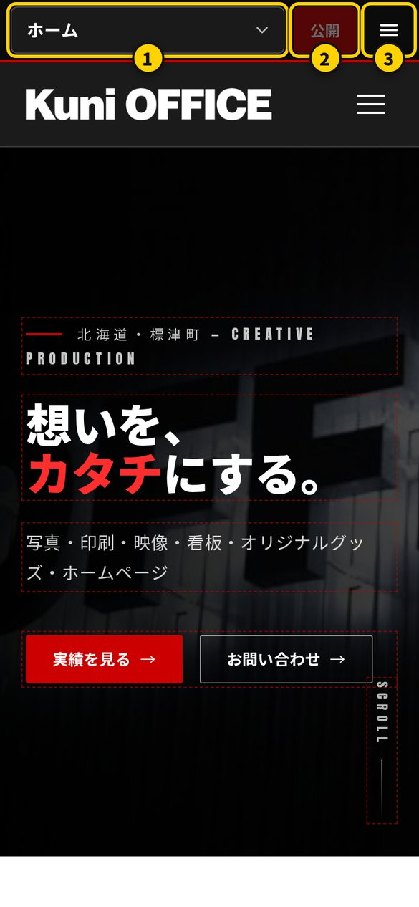
iPhone では、上の帯が小さくまとまっています。
- 1ページ選択：押すと、ページの一覧が出ます。
- 2公開：まだ公開していない変更があると、赤い「公開」ボタンに数字が出ます。
- 3メニュー（≡）：「元に戻す」は、iPhone ではメニューの中の「このページの変更を元に戻す」です。
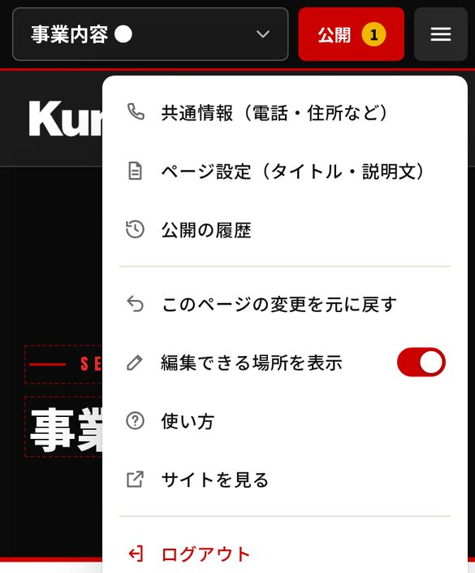
- 編集できる場所を表示：オンにすると、書き換えられる文字が赤い点線で囲まれます（iPhone でははじめからオン）。
- サイトを見る：公開中のホームページを開きます。
画面の中のメニューやボタンでは、ページは移動しません
管理画面の中では、ホームページのメニューやボタンを押してもページは切り替わりません（間違って移動しないようにしてあります）。ほかのページを直すときは、いちばん上のページ選択で選んでください。ページの中のリンクを押したときに「このページを編集する」と出たら、それを押しても切り替えられます。
1-4文章を直す
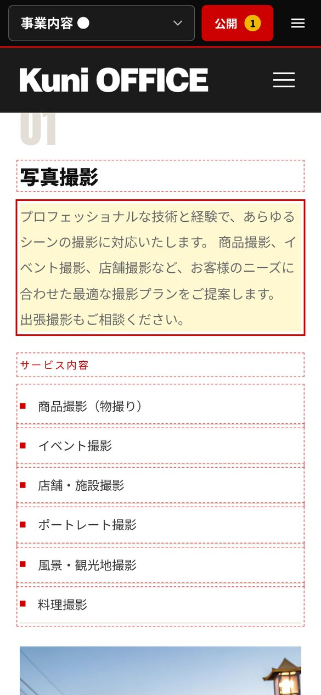
- 直したい文字をタップ（パソコンはクリック）します。赤い枠で囲まれ、その場で入力できるようになります。
- 文字を消したり入力したりして書き換えます。改行したいときは「改行」キー（パソコンは Enter キー）を押します。
- 終わったら、文字の外のどこかをタップします。書き換えた文章には黄色の下線が付き、「公開」の数字が増えます。
- 文字の太さ・色・大きさはホームページのデザインのまま決まっていて、変えられません。ほかのアプリからコピーして貼り付けても、文字だけが入ります。
- 文章をすべて消して空にすることはできません（元の文章に戻ります）。
- 電話番号・メールアドレスは、ここで直してもタップしたときのかけ先・送り先が変わりません。1-7 共通情報で変えてください。
箇条書きの項目を増やす・減らす
「サービス内容」などの箇条書きは、項目をタップすると上に小さなバーが出ます。「下に追加」で新しい項目、↑ ↓で並び順の変更、削除で項目を消せます（最後の1つは消せません）。
1-5写真を差し替える
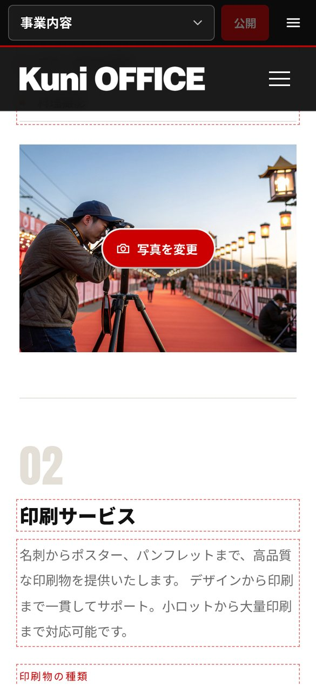
- 差し替えたい写真をタップすると、赤い写真を変更ボタンが出るので押します（パソコンでは、写真をクリックするとすぐ次の画面になります）。
- 「写真を選ぶ」を押し、「写真ライブラリ」（その場で撮るときは「写真を撮る」）から写真を選びます。
- 「いまの写真」と「新しい写真」が並んで表示されます。よければ「この写真にする」を押します。
- スマホで撮った写真をそのまま選んでOKです。大きな写真は、自動でちょうどよい大きさ（長い辺 2000 ピクセルまで）に縮めて使います。
- 写真は枠に合わせて中央を切り抜いて表示されます。見せたいものは写真の中央に置いてください。
- 公開する前なら、何度でも選び直せます。もう一度写真を押すと「元の写真に戻す」もできます。
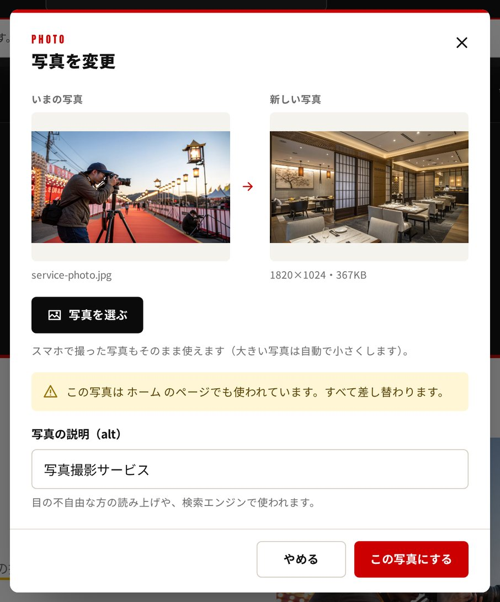
「この写真は ○○ のページでも使われています」と出たとき
1枚の写真が、いくつかのページで使われています（たとえば事業内容の「写真撮影」の写真は、ホームの「Services」にも出ています）。差し替えると、出ているページすべての写真が変わります。片方だけ変えたいときは ViFight にご相談ください。
写真の説明（alt）は、目の不自由な方の読み上げや、検索エンジンが使う短い説明です。新しい写真の内容に合わせて直しておくと親切です。
「この写真の形式は読み込めませんでした」と出たとき
iPhone の写真の形式（HEIC）が読み込めないときに出ます。iPhone の「設定」→「カメラ」→「フォーマット」→「互換性優先」にしてから撮り直すか、その写真のスクリーンショットを使ってください。iPhone で撮った写真をパソコンに送り、パソコンの管理画面で使うときに出やすいメッセージです。
1-6実績を追加・変更・削除する
ページ選択で「実績」を選びます。
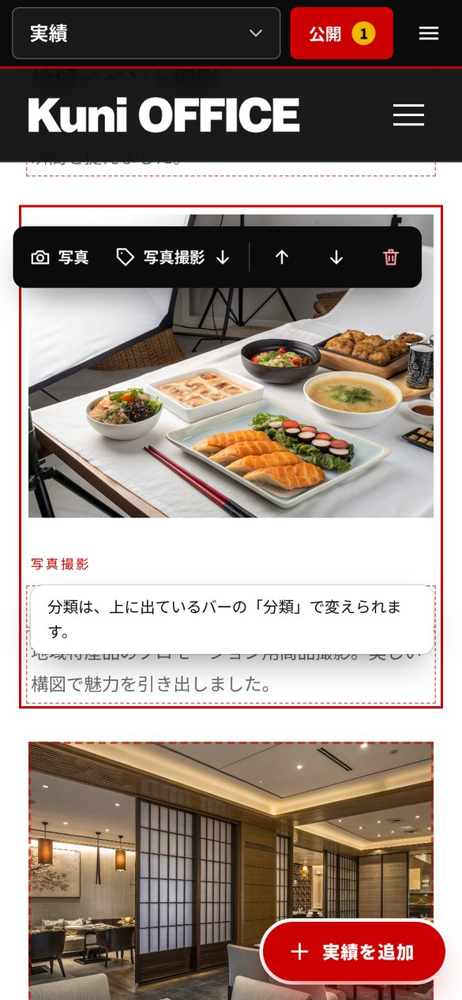
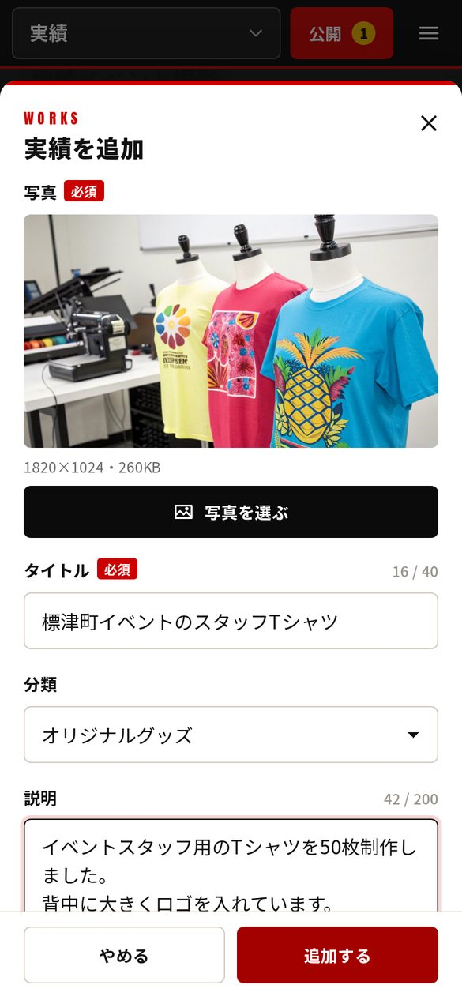
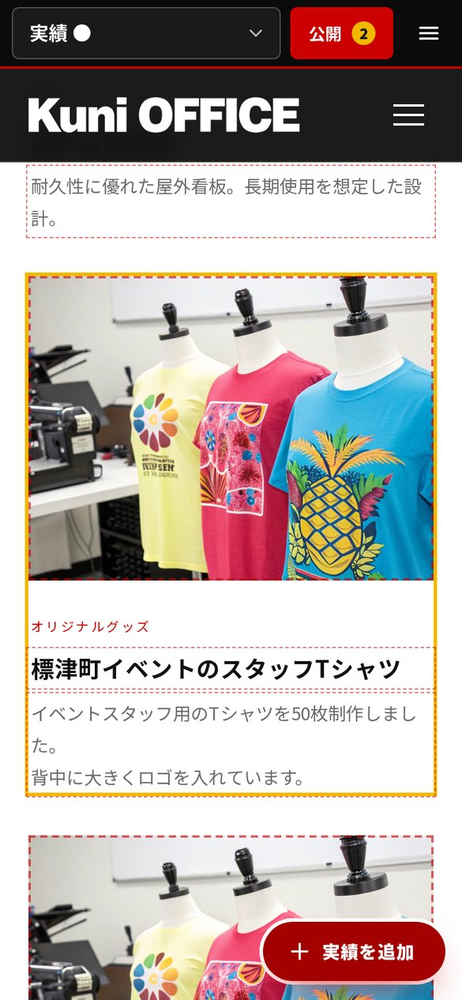
追加する
- 右下の赤い＋ 実績を追加を押します。
- 写真（必須）・タイトル（必須・40文字まで）・分類・説明（200文字まで。改行もそのまま反映されます）を入れて、「追加する」を押します。
- 新しい実績は、同じ分類の実績のいちばん前に入ります。写真のファイル名は自動で付きます。
写真・分類・順番を変える、削除する
実績の分類の文字（「写真撮影」など）のあたりをタップすると、その実績の上にバーが出ます（パソコンでは、マウスを乗せると出ます）。
| バーのボタン | できること |
|---|---|
| 写真 | その実績の写真を差し替えます（1-5と同じ）。 |
| 分類（いまの分類名と ▼） | 写真撮影・印刷物・映像制作・看板・オリジナルグッズ から選びます。実績ページ上の絞り込みボタンも、この分類で動きます。 |
| ↑ ↓ | 前へ・後ろへ（並び順を変えます）。 |
| ゴミ箱のマーク | 削除します。確認が出ます。消した直後なら、下に出るお知らせの「元に戻す」で戻せます。 |
タイトルと説明文は、1-4と同じようにタップして書き換えます。説明文がない実績は「＋ 説明を追加」をタップすると書けます。
ホームの「Works」（6枠）は別に直します
ホーム（トップページ）の実績紹介は、実績ページとは別に書かれています。実績ページで削除しても、ホームには残ります。ホームの写真やタイトルを変えるときは、ページ選択で「ホーム」を開き、写真や文字をタップして直してください。
1-7電話番号・住所などをまとめて変える（共通情報）
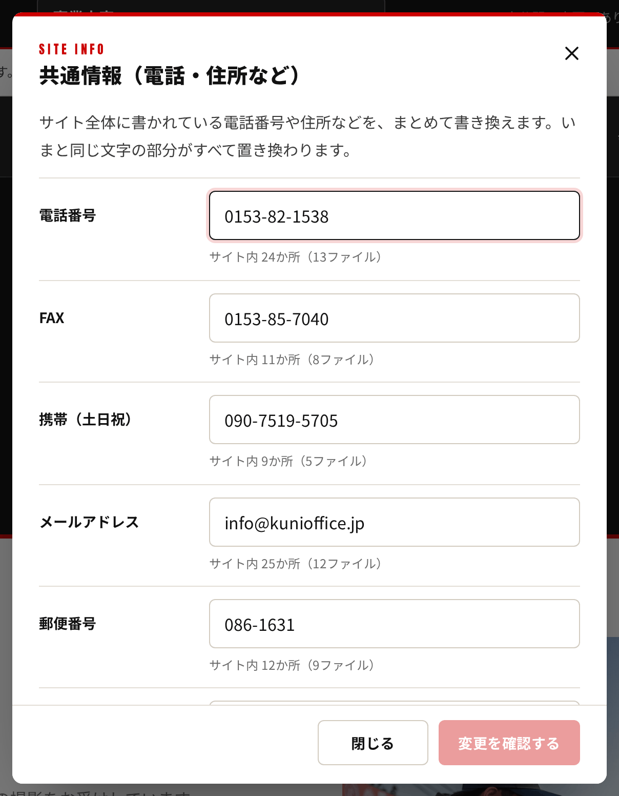
電話番号・FAX・携帯・メールアドレス・郵便番号・住所・営業時間は、各ページのいちばん下（フッター）やショップのページなど、サイトのあちこちに書かれています。「共通情報」なら、全部の場所を一度に書き換えられます。
- 先に、ほかの変更を「公開する」で公開しておきます（まだ公開していない変更があるあいだは、共通情報は変えられません）。
- 「≡」→「共通情報（電話・住所など）」を押します。
- 変えたい欄だけを書き換えて、「変更を確認する」を押します。
- 「電話番号：24か所（13ファイル）」のように、書き換わる場所の数が出ます。よければ「公開する」を押します。共通情報は、ここですぐに公開されます。
- メールアドレスを変えると、ページに出ているアドレスと一緒に、お問い合わせフォームの送り先とショップの注文メールの送り先も変わります。
- 住所を変えても、会社情報ページの地図は動きません。地図の変更は ViFight にご依頼ください。
- 「いまの値がサイト内に見つからないため、ここでは変更できません」と出た項目は、ViFight にご連絡ください。
1-8ページのタイトル・説明文（ページ設定）
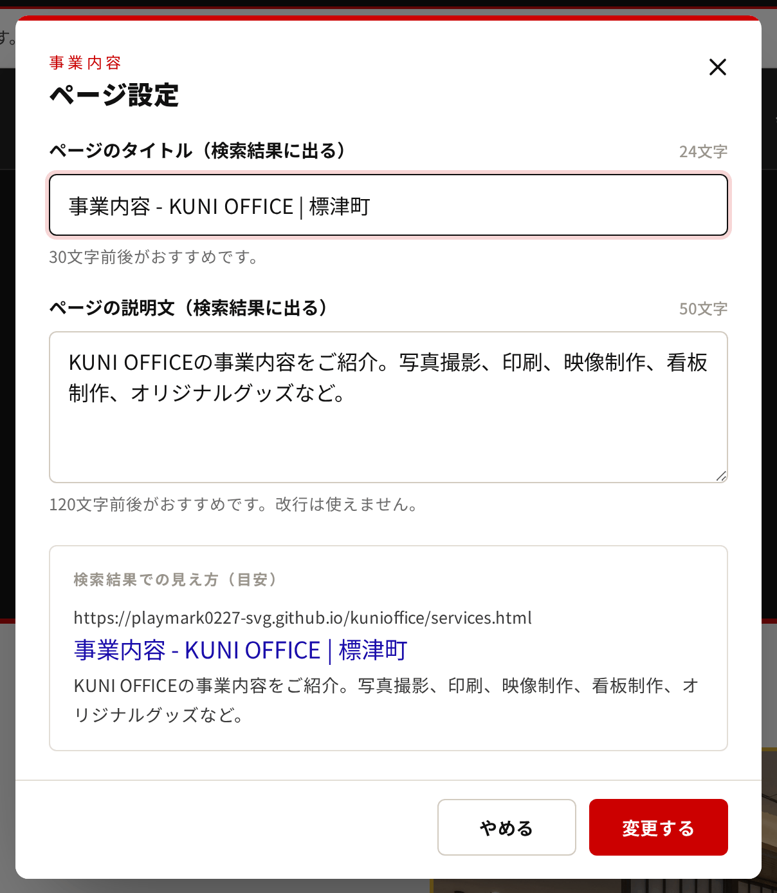
Google などの検索結果に出るページの題名と説明文です（ページの中には表示されません）。
- ページ選択で直したいページを開き、「≡」→「ページ設定（タイトル・説明文）」を押します。
- 書き換えると、下の「検索結果での見え方（目安）」も変わります。タイトルは30文字前後、説明文は120文字前後がおすすめです。
- 「変更する」を押し、ほかの変更と同じように「公開する」で反映します。
検索結果が新しくなるのは、Google が次にページを読みに来たときです（数日〜数週間かかることがあります）。
1-9公開する（ホームページに反映）
ここまでの変更は、まだ管理画面の中だけです。管理画面ではすぐに新しい見た目になりますが、ホームページはまだ変わっていません。「公開する」を押して、はじめてホームページに反映されます。いくつかのページの変更も、まとめて1回で公開できます。
- 右上の公開する（iPhone は公開）を押します。
- 「この内容で公開しますか？」に、ページごとの変更が出ます。確かめて「公開する」を押します。
- 「保存しました」→「サイトに反映しています…（約1分）」と進み、約1分で「公開しました」と出たら完了です。「サイトで見る」で、公開中のページを確かめられます。
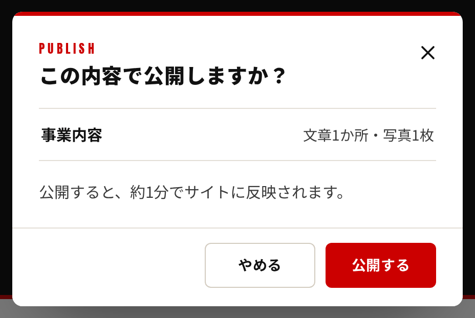
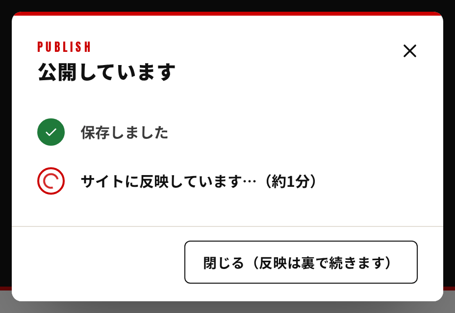
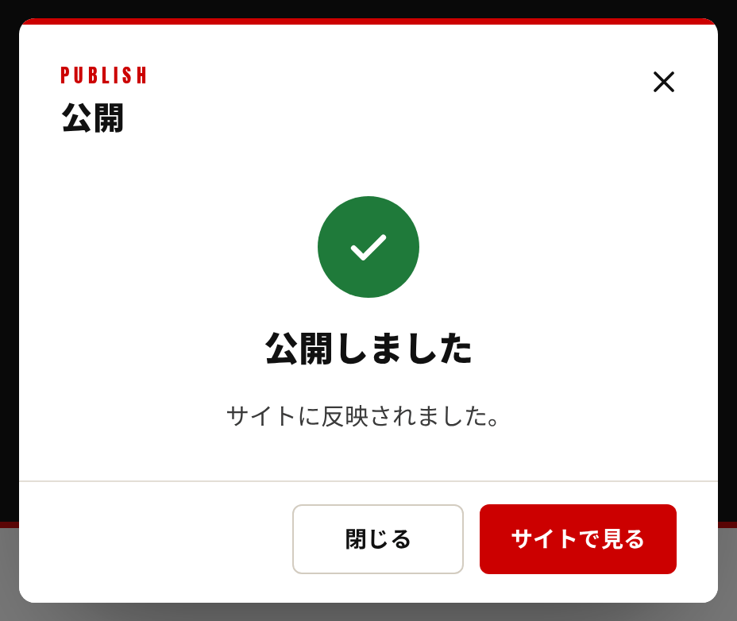
- 反映を待つあいだに画面を閉じても大丈夫です（「閉じる（反映は裏で続きます）」）。上の帯に「反映中」と出ているあいだは、反映の途中です。続けて編集してもかまいません。
- 公開したのに古いままに見えるときは、ホームページを再読み込みしてください（iPhone は画面を下に引っぱる、パソコンは Ctrl + Shift + R／Mac は ⌘ + Shift + R）。
まだ公開していない変更は、ページを閉じると消えます
管理画面のページを閉じたり、再読み込みしたりすると、まだ公開していない変更は消えてしまいます。パソコンでは確認が出ますが、iPhone では確認が出ません。iPhone でほかのアプリに長く切り替えていると、Safari がページを読み込み直して消えることもあります。区切りのよいところで「公開する」を押してください。
1-10公開した変更を取り消す（公開の履歴）
公開したあとで「やっぱり元に戻したい」ときに使います。まだ公開していない変更は、上の帯の「元に戻す」で取り消せます。
- 「≡」→「公開の履歴」を押します。最近の20件が、新しい順に並びます。
- 取り消したい公開の「この変更を取り消す」を押します。
- 確認の画面で「取り消して公開する」を押すと、その公開の前の状態に戻して公開されます（約1分で反映）。
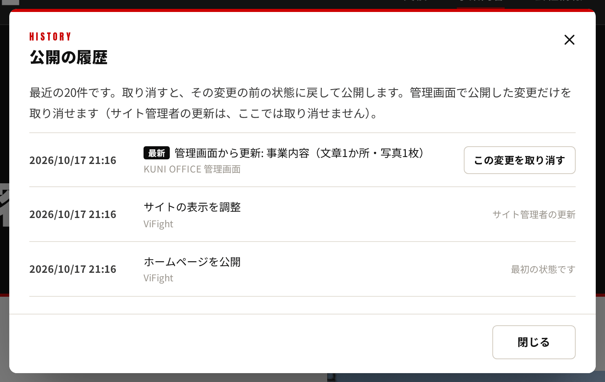
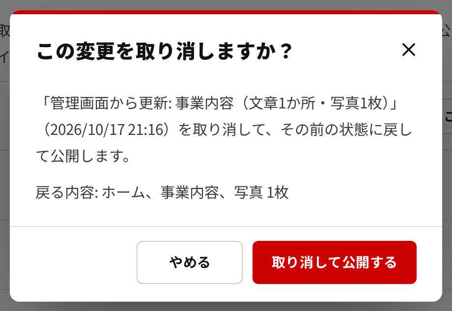
- 取り消せるのは、管理画面から公開したもの（「管理画面から更新」で始まるもの）です。「サイト管理者の更新」と書かれたものは ViFight が行った更新なので、ここでは取り消せません。
- まだ公開していない変更があるあいだは、取り消しはできません。先に公開するか、「元に戻す」で取り消してください。
- 「この後にも ○○ が更新されています」と出たときは、そのあとに同じページを直した内容も一緒に元に戻ります。
- 取り消しも1回の公開として履歴に残るので、「取り消し」をさらに取り消すこともできます。
1-11変更できない部分（価格など）
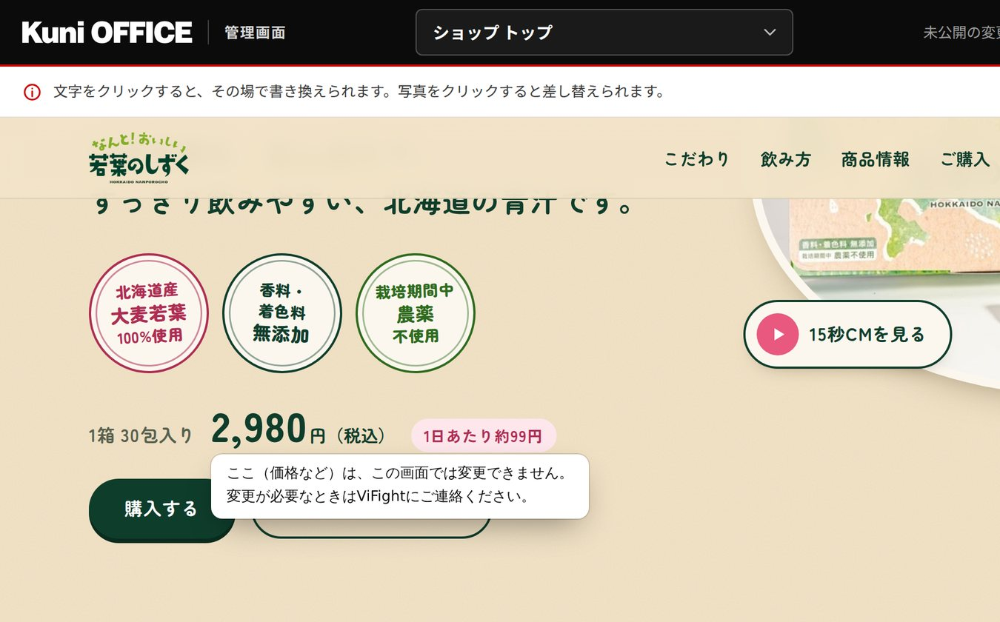
管理画面で書き換えられるのは、各ページの本文の文字と写真です。次の部分は、ホームページの動きが壊れないように鍵がかかっていて、タップしても書き換えられません。
- 価格・送料・割引（ショップの価格、「1日あたり約99円」「送料500円」「10%OFF」など）… カートの計算と連動しているため、ViFight が変更します。
- ページのいちばん上（メニュー）と、いちばん下（フッター） … 電話番号・住所などは共通情報で変えられます。
- お問い合わせの入力欄・ボタン・地図・動画
- 実績の分類名（「写真撮影」など）… 実績のバーの「分類」で変えます（1-6）。
「編集できる場所を表示」がオンのとき、赤い点線で囲まれない部分は管理画面では変えられない部分です。変更が必要なときは ViFight（久保）にご連絡ください。ページの追加やデザインの変更も ViFight が行います。
1-12困ったとき
| こんなとき | どうするか |
|---|---|
| 「アクセスキーが正しくないか、有効期限が切れています」と出てログインできない | アクセスキーを最後まで正しく貼り付けたか（前後に空白が入っていないか）確かめます。それでもだめなときは、アクセスキーの有効期限（1年）が切れています。ViFight に新しいアクセスキーをもらってください。 |
| 編集の途中でログイン画面に戻った（「ログインの有効期限が切れたか、アクセスキーが無効になりました」） | 管理画面のページは閉じずに、新しいアクセスキーを入れてください。編集中の内容はそのまま続けられます。新しいアクセスキーは ViFight からもらいます。 |
| 「このアクセスキーでは編集できません」「公開できませんでした（権限がありません）」 | アクセスキーの設定の問題です。ViFight にご連絡ください。新しいアクセスキーをもらったら「別のアクセスキーを入力する」から入れれば、変更は消えません。 |
| 「インターネットに接続できません」「通信に失敗しました」 | 電波のよい場所（Wi-Fi など）で、もう一度「公開する」を押してください。変更はそのまま残っています。上に「インターネットに接続されていません」と出ているあいだも、編集は続けられます。 |
| 「ほかの場所で同じページが更新されました」 | 同じページを、ViFight やほかの端末（パソコンと iPhone など）が先に更新したときに出ます。「読み込み直す」を押すと最新の内容が表示されますが、まだ公開していなかった変更は消えます。直した内容をメモしてから読み込み直し、もう一度直して公開してください。 |
| 「アクセスが集中しています」 | しばらく（数分〜1時間ほど）待ってから、もう一度試してください。 |
| 「反映でエラーが発生しました。ViFightに連絡してください。」 | 変更は保存されていますが、ホームページへの反映がうまくいきませんでした。ViFight にご連絡ください。 |
| 公開したのにホームページが変わらない | 1〜2分待ってから、ホームページを再読み込みしてください（1-9）。 |
| 「この写真の形式は読み込めませんでした」 | 1-5の「この写真の形式は読み込めませんでした と出たとき」を見てください。 |
| タップしても書き換えられない | 鍵がかかった部分です（1-11）。 |
| 間違えて公開してしまった | 「≡」→「公開の履歴」から取り消せます（1-10）。 |
わからないことは、ViFight（久保）までご連絡ください。
2サイト管理者（ViFight）向け：アクセスキーの用意
この章はサイト管理者（ViFight）向けです。高桑様は読み飛ばしてかまいません。
アクセスキーの作り方（GitHub の Fine-grained token）
playmark0227-svg/kuniofficeを持っている GitHub アカウントでログインし、右上のアイコン →「Settings」を開きます。- 左メニューのいちばん下「Developer settings」→「Personal access tokens」→「Fine-grained tokens」→「Generate new token」。
- Token name：だれのどの端末用かわかる名前（例：
kunioffice 管理画面 高桑 iPhone）。Resource owner：playmark0227-svg。 - Expiration：1年（Custom で1年後の日付）。更新日をカレンダーに入れておきます。
- Repository access：Only select repositories →
kuniofficeだけを選びます。 - Permissions（Repository permissions）：Contents = Read and write、Actions = Read-only。Metadata（Read-only）は自動で付きます。ほかは No access のままにします。
- 「Generate token」を押し、表示された
github_pat_…の文字列をコピーします（この画面を閉じると二度と表示されません）。
権限が足りないとき
Contents が Read-only だと、ログイン時に「このアクセスキーでは編集できません（読み取り専用です）」と出ます。Actions を付けないと公開はできますが、「サイトに反映しています」の進み具合が出ず、「1〜2分後にサイトに反映されます」とだけ表示されます。
安全な渡し方
- いちばん安全なのは、直接会って高桑様の iPhone で管理画面にログインし、Safari の「パスワードを保存」で iPhone に保存してもらう方法です。
- メール・LINE・チャット・紙には残さないでください。離れて渡すときは、AirDrop や iPhone の「パスワード」アプリの共有など、相手の端末に直接届く方法を使います。
- 1人（1台）につき1つのアクセスキーを作ると、なくしたときにその1つだけを止められます。
期限が切れたとき・端末をなくしたとき
- 期限が近づくと GitHub からメールが届きます。期限が切れると管理画面にログインできなくなる（「アクセスキーが正しくないか、有効期限が切れています」）ので、同じ手順で作り直して渡します。トークンの画面の「Regenerate token」でも作り直せます（古い文字列は使えなくなります）。
- iPhone やパソコンをなくした、アクセスキーが漏れたかもしれないときは、すぐに「Fine-grained tokens」でそのトークンを開き、「Delete」で取り消します。そのあと新しいアクセスキーを作って渡します。
管理画面の仕組み（知っておくこと）
- 管理画面で「公開する」を押すと、GitHub の
mainブランチに直接コミットされます（メッセージは「管理画面から更新: …」、取り消しは「管理画面から取り消し: …」）。GitHub Actions（Deploy to GitHub Pages）が約1分で公開します。 - ローカルで作業する前は、必ず
git pullで最新のmainを取り込んでください。古いファイルのまま push すると、管理画面で公開された変更を上書きしてしまいます。（同じページが先に更新されていた場合、管理画面のほうは上書きせずに「ほかの場所で同じページが更新されました」で止まります。） mainにブランチ保護（プルリクエスト必須など）をかけると、管理画面から公開できなくなります。- 管理画面が書き換えるのは、ページの HTML・写真と、共通情報の置き換えで使う
.js（js/main.js・wakaba/js/config.jsなど）だけです。admin/・.github/・CSS などは書き換えも取り消しもできません。 - 価格など
data-cms-lockを付けた部分は編集できません。HTML を直すときは、data-cms-lock・data-cms-list="works"などのdata-cms-で始まる印を消さないでください。詳しくはリポジトリのREADME.md「管理画面（/admin/）」を参照してください。
第2部管理画面が使えないとき（ファイルで直す方法）
ふだんは1章の管理画面を使ってください。この部は、管理画面が使えないときや、管理画面では変えられない部分をファイルで直すときの方法です。
ファイルで直す前に、この4つを守ってください
- いちばん新しいファイルで作業する。管理画面で公開した変更は、以前に受け取ったフォルダ（ZIP）には入っていません。古いファイルで上書きすると、管理画面で公開した変更が消えてしまいます。作業の前に、ViFight から最新のフォルダを受け取るか、https://github.com/playmark0227-svg/kunioffice の緑の「Code」→「Download ZIP」で最新版をダウンロードしてください。
- 作業前に、フォルダを丸ごとコピーしてバックアップを取っておく（失敗しても元に戻せます）
- 写真は「同じファイル名」で上書きするだけで差し替わります（HTMLを触る必要はありません）
- 文章は「文字だけ」書き換える。
<と>で囲まれた部分（タグ）は消したり変えたりしない
3フォルダの中身
最新のフォルダ（ZIPを解凍したもの）の中で、触るのは次の場所だけです。
| 場所 | 中身 |
|---|---|
images フォルダ | KUNI OFFICE のページで使っている写真。写真の差し替えはここ（管理画面で追加した実績の写真は、この中の works フォルダに入っています） |
index.html | ホーム（トップページ）の文章 |
services.html | 事業内容ページの文章 |
works.html | 実績ページの文章・実績の追加／削除 |
company.html | 会社情報ページの文章 |
contact.html | お問い合わせページの文章 |
wakaba フォルダ | 「若葉のしずく」オンラインショップ一式（10章） |
manual フォルダ | このマニュアル |
js/main.js | お問い合わせの送り先メールアドレス（9章）と、電話番号の書き換え（5章）のときだけ開きます |
触らなくてよいもの
admin（管理画面）・css（デザイン）・js（動き。上の表の js/main.js の書き換え以外）・.github（公開の自動化）・.gitignore・server.js・package.json・.env.example・.md で終わる説明書・shop.html／success.html（旧ページからの転送用）は、変更しなくてOKです。
4写真を差し替える
管理画面なら、写真をタップして選ぶだけで差し替えられます（1-5）。ファイル名を気にする必要もありません。
手順（同じ名前で上書きするだけ）
- 差し替えたい写真を、下の「写真一覧」で探し、ファイル名を確認します（例：
service-photo.jpg）。 - 新しい写真のファイル名を、そのファイル名と1文字も違わない名前に変えます。
- その写真を
imagesフォルダに入れ、「置き換えますか？」と聞かれたら「置き換える」を選びます。 - 7章の方法でパソコンで確認し、8章の方法で公開します。
ポイント：1枚の写真が2か所に出ることがあります
たとえば service-photo.jpg を差し替えると、「事業内容ページ」と「トップページのServices」の両方が新しい写真に変わります。どこに出るかは写真一覧の「表示される場所」で確認できます。
写真の大きさ・向き
| 項目 | おすすめ |
|---|---|
| 向き | 横長（横4：縦3くらい）。代表挨拶の写真だけ縦長（縦5：横4） |
| 大きさ | 横 1600 ピクセル前後（スマホで撮った写真をそのまま使っても表示されます） |
| ファイルの種類 | JPEG（.jpg）。iPhone の HEIC 形式は表示されないので、JPEG で書き出してください |
| ファイルの重さ | 1枚 500KB 前後まで（重いと表示が遅くなります） |
写真は枠に合わせて自動で中央を切り抜いて表示されます。端に写っているものは切れることがあるので、見せたいものは写真の中央に置いてください。
ファイル名の注意
- 大文字・小文字も区別されます。
Service-Photo.JPGやservice-photo.jpegは別の名前として扱われ、公開したホームページでは表示されません。 - パソコンでの確認（7章）では、大文字の
.JPGでも表示されてしまいます。カメラやスマホから取り込んだ写真は.JPG（大文字）になっていることが多いので、公開する前に、ファイル名がすべて小文字の.jpgになっているか必ず目で確認してください。 - パソコンの設定で拡張子（.jpg）が見えないと、名前を変えたときに
service-photo.jpg.jpgになってしまうことがあります。
Windows は「表示」→「ファイル名拡張子」にチェック、Mac は Finder の「設定」→「詳細」→「すべてのファイル名拡張子を表示」をオンにすると確認できます。
写真一覧
AIの仮画像 はAIで作った仮の画像です。実際の写真への差し替えをおすすめします。準備中 は、黒地にタイトルだけが入った仮の画像です。上書きすると写真が表示されます。
業務内容の写真（最優先：AIで作った仮の画像です）
事業内容ページと、トップページの「Services」に表示されます。
| 今の写真 | ファイル名 | 表示される場所 |
|---|---|---|
 | images/service-photo.jpgAIの仮画像 | 事業内容「01 写真撮影」／トップ「写真撮影」 用意する写真の例：撮影中の様子、撮影した写真など |
 | images/service-print.jpgAIの仮画像 | 事業内容「02 印刷サービス」／トップ「印刷サービス」 用意する写真の例：名刺・チラシなどの印刷物 |
 | images/service-video.jpgAIの仮画像 | 事業内容「03 映像制作」／トップ「映像制作」 用意する写真の例：撮影・編集の様子 |
 | images/service-signboard.jpgAIの仮画像 | 事業内容「04 看板制作」／トップ「看板制作」 用意する写真の例：手がけた看板 |
 | images/service-goods.jpgAIの仮画像 | 事業内容「05 オリジナルTシャツ・グッズ制作」／トップ「オリジナルグッズ」 用意する写真の例：Tシャツ・グッズ |
 | images/service-website.jpgAIの仮画像 | 事業内容「06 ホームページ制作」／トップ「ホームページ制作」 用意する写真の例：パソコン・スマホに映したホームページなど |
 | images/service-other.jpgAIの仮画像 | 事業内容「07 その他サービス」（事業内容ページのみ） 用意する写真の例：ロゴ・デザインなどの制作物 |
実績の写真
実績ページに表示されます。★印の6枚はトップページの「Works」にも表示されます。
| 今の写真 | ファイル名 | 表示される場所 |
|---|---|---|
 | images/work-event.jpgAIの仮画像 | 実績「地域イベント撮影」★ |
 | images/work-product.jpgAIの仮画像 | 実績「商品撮影」★ |
 | images/work-store.jpgAIの仮画像 | 実績「店舗撮影」★（トップでは「店舗・料理撮影」） |
 | images/work-brochure.jpgAIの仮画像 | 実績「企業パンフレット」★ |
 | images/work-flyer.jpgAIの仮画像 | 実績「イベントチラシ」★ |
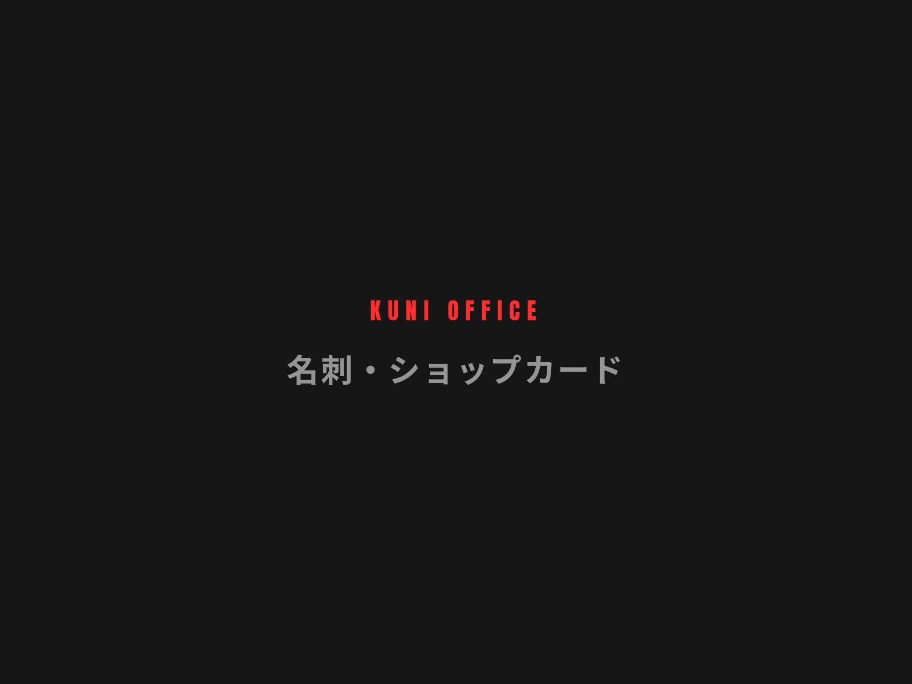 | images/work-meishi.jpg準備中 | 実績「名刺・ショップカード」 |
 | images/work-video.jpgAIの仮画像 | 実績「企業PR映像」★ |
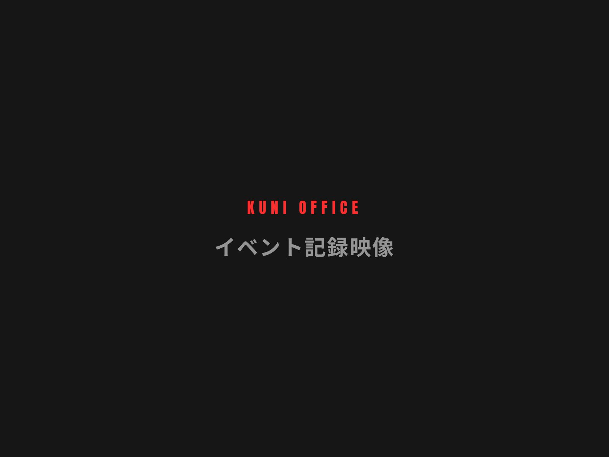 | images/work-event-movie.jpg準備中 | 実績「イベント記録映像」 |
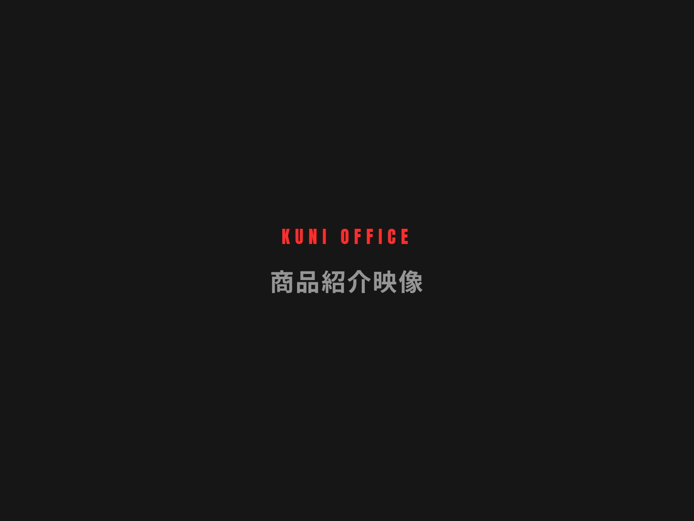 | images/work-product-movie.jpg準備中 | 実績「商品紹介映像」 |
 | images/work-signboard.jpgAIの仮画像 | 実績「店舗看板」 |
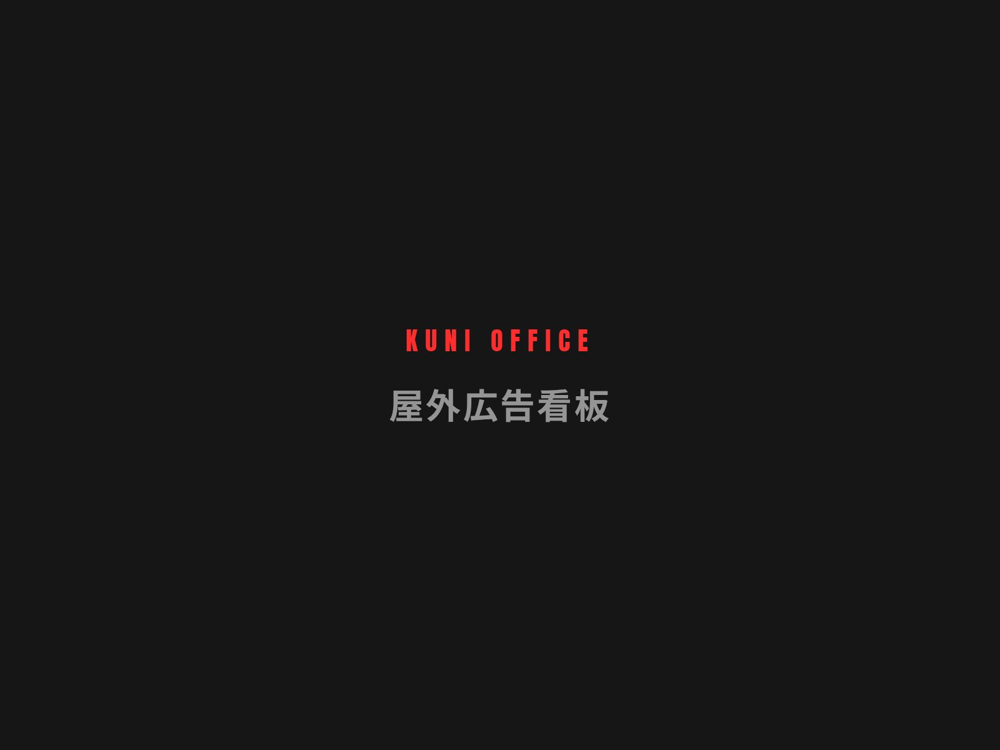 | images/work-outdoor-sign.jpg準備中 | 実績「屋外広告看板」 |
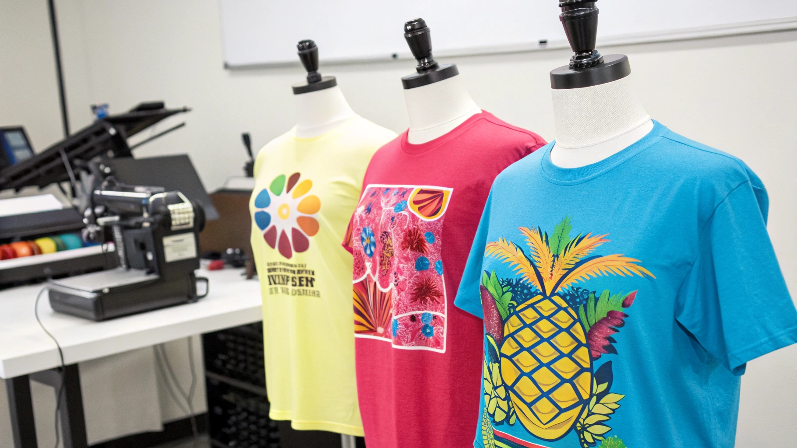 | images/work-tshirt.jpgAIの仮画像 | 実績「イベントTシャツ」 |
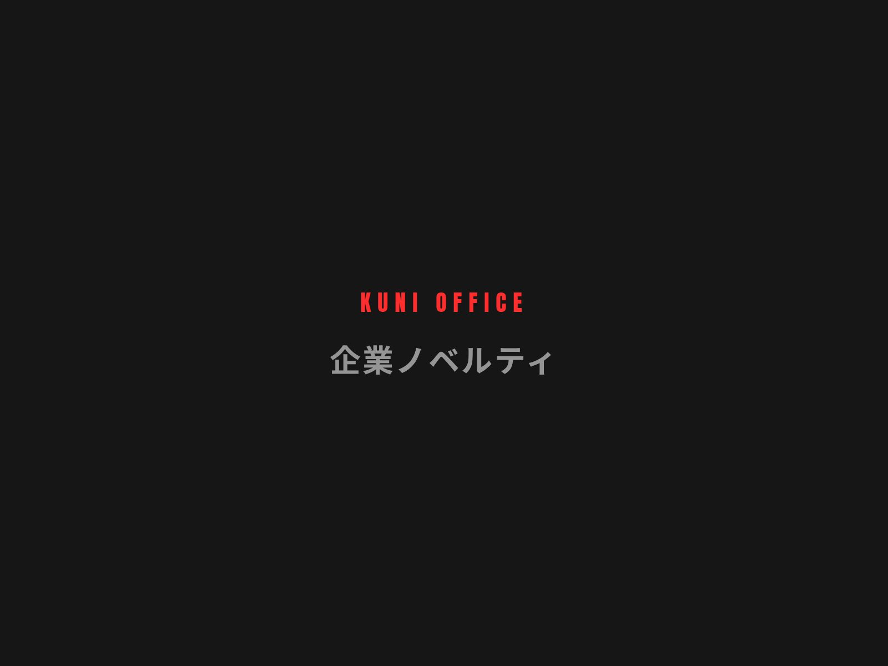 | images/work-novelty.jpg準備中 | 実績「企業ノベルティ」 |
トップページの写真
| 今の写真 | ファイル名 | 表示される場所 |
|---|---|---|
images/logo1.jpg | いちばん上の大きな写真（KUNI OFFICEの看板） 用意する写真の例：差し替える場合は横長の写真 | |
images/about.jpgAIの仮画像 | 「About KUNI OFFICE について」の写真 用意する写真の例：事務所・お店・作業の様子など | |
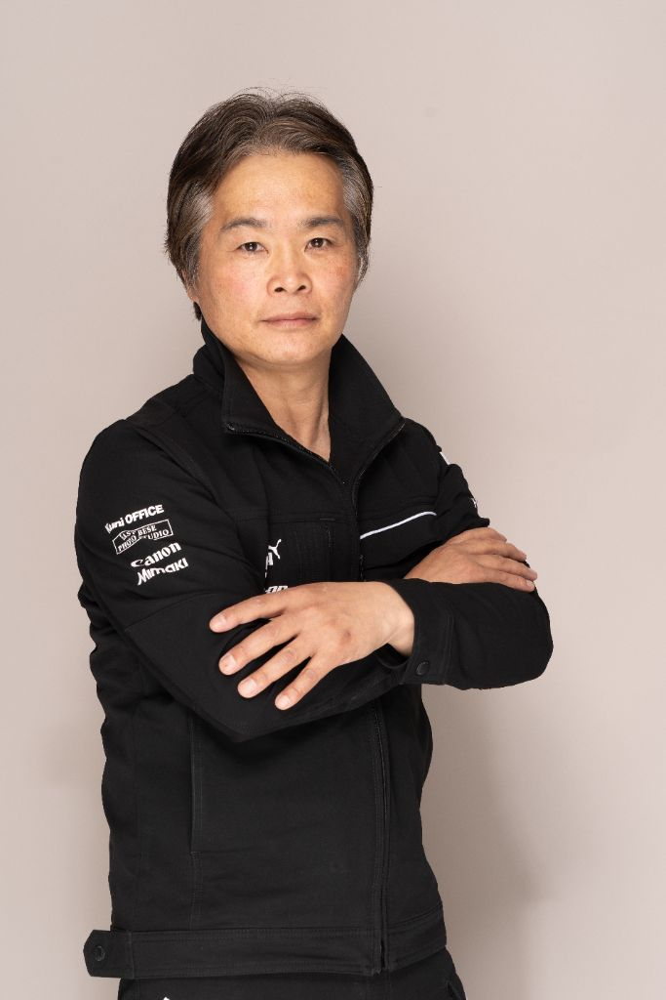 | images/ceo-photo.jpg | 「Message お客様の「想い」をカタチにする。」の写真（代表の写真） 用意する写真の例：縦長の写真（縦5：横4） |
オンラインショップ（若葉のしずく）の写真
ショップのページは wakaba フォルダの中にあります。
| 今の写真 | ファイル名 | 表示される場所 |
|---|---|---|
wakaba/images/package-kraft.jpg | ショップのトップ・商品情報・購入欄／KUNI OFFICEトップの「Online Shop」 | |
wakaba/images/package-cream.jpg | ショップの「おいしさ」・商品情報・定期便 | |
wakaba/images/og.jpg | LINEやSNSでショップのURLを送ったときに出る画像 用意する写真の例：横1200×縦630 |
使っていない写真（予備）
images フォルダの ceo-photo-1.jpg（代表写真の別カット）、ceo-photo-2.jpg（今使っている ceo-photo.jpg と同じ写真のコピー）、logo-black.png・logo2.png（ロゴの別バージョン）は、今のホームページでは使っていません。残しておいても消しても表示に影響はありません。ヘッダーのロゴは logo-white.png です。
5文章を直す
管理画面なら、ホームページの文字をタップしてその場で直せます（1-4）。
使うソフト
Windows
「メモ帳」で開けます。ファイルを右クリック →「プログラムから開く」→「メモ帳」。
Mac
「テキストエディット」で開くと見た目が崩れて表示されるため、次の Visual Studio Code をおすすめします。
おすすめは無料の Visual Studio Code（Windows・Mac 両方あり）です。文字の色分けで「タグ」と「文章」の区別がつきやすく、全ページまとめての置き換えもできます。
手順
- 直したいページのファイルを開きます（下の表を参照）。
- Ctrl + F（Mac は ⌘ + F）を押し、今ホームページに出ている文章の一部を入力して探します。
- 見つかった文章の文字だけを書き換えます。
- 上書き保存します（Ctrl + S／Mac は ⌘ + S）。文字コードを聞かれたら UTF-8 のまま保存してください。
- 7章の方法でパソコンで確認します。
| ホームページのページ | ファイル |
|---|---|
| ホーム（トップページ） | index.html |
| 事業内容 | services.html |
| 実績 | works.html |
| 会社情報 | company.html |
| お問い合わせ | contact.html |
書き換えてよい所・いけない所
例：事業内容ページ「写真撮影」の説明文を直す場合
変更前
<p class="service-description"> プロフェッショナルな技術と経験で、あらゆるシーンの撮影に対応いたします。 商品撮影、イベント撮影、店舗撮影など、お客様のニーズに合わせた最適な撮影プランをご提案します。 </p>
変更後（黄色の文字の部分だけ変える）
<p class="service-description"> 標津町を中心に、商品・店舗・イベントの撮影をお受けしています。 出張撮影もご相談ください。 </p>
青い文字（タグ）は変えない
<p class="...">や</p>のような、<と>で囲まれた部分は消したり変えたりしないでください。表示が崩れます。data-cms-lockやdata-cms-list="works"のようにdata-cmsで始まる部分は、管理画面が使う印です。消さないでください。- 文中で改行したいときは、改行したい場所に
<br>と入れます。 &は「&」記号の書き方です。そのまま残してください。
箇条書きの項目を増やす・減らす
事業内容ページの「サービス内容」などの箇条書きは、<li>〜</li> の1行が1項目です。1行まるごとコピーして下に貼り付け、文字を書き換えれば項目が増えます。減らすときは1行まるごと消します。
<li>商品撮影（物撮り）</li> <li>イベント撮影</li> <li>ドローン空撮</li> ← コピーして追加した行
住所・電話番号・メール・営業時間を変えるとき
管理画面の「共通情報」なら一度に変えられます
管理画面の「≡」→「共通情報（電話・住所など）」を使うと、下の表の場所がすべて、漏れなく一度に書き換わります（1-7）。ファイルで直すのは、管理画面が使えないときだけにしてください。
これらは各ページの下の部分（フッター）など、複数のファイルにそれぞれ書かれています。1つのファイルだけ直すと、ページによって違う番号が出てしまいます。
| 情報 | 書かれているファイル |
|---|---|
| 電話 0153-82-1538 メール info@kunioffice.jp | index.html services.html works.html company.html contact.html js/main.js、ショップの wakaba フォルダ内の各ページと wakaba/js/config.js |
| FAX・携帯・住所 | index.html services.html works.html company.html contact.html（FAX・住所はショップの wakaba フォルダ内にもあります） |
| 営業時間 8:30〜17:30 | company.html contact.html、ショップの wakaba フォルダ内の各ページと wakaba/js/config.js。探すときは 8:30 だけで検索すると漏れなく見つかります |
住所が変わった場合、会社情報ページの地図は文字の置き換えでは移動しません。地図の差し替えは ViFight にご依頼ください。
Visual Studio Code なら一度に置き換えられます
- Visual Studio Code の「ファイル」→「フォルダーを開く」で、受け取ったフォルダ全体を開きます。
- Ctrl + Shift + H（Mac は ⌘ + Shift + H）で「フォルダーを指定して置換」を開きます（「編集」メニューにもあります）。
- 上の欄に古い番号、下の欄に新しい番号を入れ、見つかった場所を確認してから「すべて置換」を押します。
6実績を追加・削除する
管理画面なら、「＋ 実績を追加」で写真とタイトルを入れるだけで追加できます（1-6）。
実績ページ（works.html）の実績は、<div class="works-grid-large" data-cms-list="works"> の中に、1件ごとに次のような10行のかたまりで書かれています。
<div class="work-item" data-category="photo"> <div class="work-image"> <img src="images/work-event.jpg" alt="地域イベント撮影"> </div> <div class="work-details"> <span class="work-category" data-cms-lock>写真撮影</span> <h3>地域イベント撮影</h3> <p>標津町の祭りイベントの記録撮影。躍動感のある瞬間を捉えました。</p> </div> </div>
追加する
- 写真に新しいファイル名を付けて
imagesフォルダに入れます。名前は半角の英数字とハイフンだけ（例：work-shibetsu-festival.jpg）。日本語や空白は使わないでください。 works.htmlを開き、同じ種類の実績のかたまり（<div class="work-item"の行から数えて10行目の</div>まで）をまるごとコピーし、そのすぐ下に貼り付けます。- 貼り付けたかたまりの黄色の部分（写真のファイル名・タイトル・説明文・種類）を書き換えます。
- 種類（
data-category="..."と表示名）は、下の表の組み合わせのどれかにします。実績ページ上部の絞り込みボタンはこの値で動きます。
data-category="..." に入れる値 | 表示名（work-category に入れる文字） |
|---|---|
photo | 写真撮影 |
print | 印刷物 |
video | 映像制作 |
signboard | 看板 |
goods | オリジナルグッズ |
削除する
消したい実績のかたまりを、<div class="work-item" の行から数えて10行目の </div> まで、まるごと消します。途中だけ消したり、行数がずれたりすると表示が崩れます。
トップページの「Works」（6枠）
トップページの実績紹介は index.html に書かれていて、写真は実績ページと同じファイル（★印）を使っています。実績ページの写真を上書きすると、トップページも一緒に変わります。
トップに出す実績そのものを入れ替えたいときは、index.html の class="work-tile" のかたまりの黄色の5か所を書き換えます。種類（絞り込みの値と表示名）は、この章の上の表と同じ組み合わせにしてください。
<a href="works.html?filter=photo" class="work-tile reveal"> <img src="images/work-store.jpg" alt="店舗撮影"> <div class="work-tile-meta"> <span class="tag">写真撮影</span> <h3>店舗・料理撮影</h3> </div> </a>
実績ページ（works.html）から★印の実績を削除しても、トップページには残ります。トップからも外す場合は、index.html 側も入れ替えてください。
7パソコンで確認する
- フォルダの中の
index.htmlをダブルクリックすると、インターネットに公開する前の状態をブラウザで見られます。 - 変更したページを開いて、写真や文章が正しく出ているか確認します。スマホでの見え方は、ブラウザの幅を狭くすると確認できます。
- 変わっていないときは、再読み込み（Ctrl + Shift + R／Mac の Chrome は ⌘ + Shift + R、Safari は ⌥ + ⌘ + R）をしてください。
- ショップは、メニューの「ショップ」から開くか、
wakabaフォルダの中のindex.htmlをダブルクリックして確認します。
パソコンで開いたときは、地図やお問い合わせなど、一部インターネットにつながっている部分の動きが本番と違うことがあります。
8ホームページに反映（公開）する
パソコンの中のファイルを直しただけでは、インターネット上のホームページは変わりません。次のどちらかの方法で反映します。
公開中のホームページ：https://playmark0227-svg.github.io/kunioffice/
方法A：変更したファイルを ViFight に送る（かんたん）
- 変更した写真・ファイルをまとめて ViFight（久保）に送ります（メール添付や大容量ファイル送信サービスなど）。どのファイルを変えたかも書き添えてください。
- ViFight 側でホームページに反映し、ご連絡します。
方法B：GitHub（ギットハブ）で直接反映する
ホームページのデータは GitHub というサービスに保管されていて、ここに変更を保存すると1〜2分で自動的にホームページに反映されます。ViFight から GitHub の編集権限を受け取ったあとに使える方法です。
写真を差し替える
- GitHub にログインし、https://github.com/playmark0227-svg/kunioffice を開きます。
imagesフォルダをクリックします。- 右上の「Add file」→「Upload files」を押します。
- 差し替える写真（一覧と同じファイル名にしたもの）をドラッグ＆ドロップします。
- 下の緑のボタン「Commit changes」を押します。
文章を直す
- 直したいファイル（例：
services.html）をクリックします。 - 右上の鉛筆マーク（Edit this file）を押します。
- 5章と同じ要領で文字だけ書き換えます。
- 右上の「Commit changes...」→ 出てきた画面の「Commit changes」を押します。
管理画面で公開した変更を消さないために
GitHub の画面で文章を直すときは、いつも最新のファイルが開くので心配ありません。ただし、パソコンの中の古い HTML ファイルを「Upload files」でアップロードすると、管理画面で公開した変更が消えてしまいます。アップロードするのは写真だけにしてください。
反映されたか確認するには
1〜2分たってからホームページを開き、再読み込みしてください。GitHub の「Actions」タブで、いちばん上に緑のチェックが付いていれば反映完了です。赤いバツが付いたときは、ViFight にご連絡ください。
GitHub には変更の履歴がすべて残るので、失敗してもあとから元に戻せます（GitHub で直接保存した変更は、管理画面の「公開の履歴」では「サイト管理者の更新」と表示され、管理画面からは取り消せません。ViFight にご連絡ください）。
9お問い合わせフォームについて
お問い合わせページのフォームで「メールで送信する」を押すと、お客様のパソコン・スマホのメールアプリが、入力内容が入った状態で開きます。お客様がそのまま送信すると、info@kunioffice.jp にメールが届きます。
送り先のメールアドレスを変えるときは、管理画面の「共通情報」でメールアドレスを変えてください（1-7）。ページに表示しているメールアドレス・お問い合わせの送り先・ショップの注文の送り先が、まとめて変わります。
ファイルで直す場合は、js/main.js を開いて CONTACT_EMAIL で検索し、const CONTACT_EMAIL = 'info@kunioffice.jp'; の ' と ' の間を書き換えてください。ページに表示しているメールアドレスやショップの注文の送り先（wakaba/js/config.js）も変える場合は、5章の「フォルダーを指定して置換」で古いアドレスをまとめて置き換えると、これらも一緒に変わります。
10オンラインショップ（若葉のしずく）
ショップは wakaba フォルダの中にあり、ページの構成は KUNI OFFICE のページと同じです。写真は wakaba/images フォルダを同じ名前で上書きすれば差し替わります（写真一覧の最後を参照）。管理画面では、ページ選択の「若葉のしずく」の4ページ（ショップ トップ・ご利用ガイド・特定商取引法の表記・プライバシーポリシー）の文章と写真を直せます（価格・送料は除く）。
| 変えたいこと | 直すファイル |
|---|---|
| 価格・送料・定期便の条件 | 管理画面では変えられません。ViFight にご依頼ください。（下の「ViFight 向けメモ」） |
| 商品説明・飲み方・よくある質問 | wakaba/index.html（管理画面の「ショップ トップ」） |
| 送料・お届け・返品の説明 | wakaba/guide.html（管理画面の「ご利用ガイド」。送料の金額の部分は ViFight） |
| 販売者・連絡先などの法律上の表記 | wakaba/tokushoho.html（管理画面の「特定商取引法の表記」） |
ViFight 向けメモ：価格・送料を変えるとき
wakaba/js/config.js（カートの計算に使う値）と、ページに書いてある価格（wakaba/index.html・wakaba/guide.html・wakaba/tokushoho.html、KUNI OFFICE トップの index.html の「Online Shop」）の両方を直します。wakaba/index.html の上のほうには検索エンジン向けにカンマなしの価格（"price": "2980"）もあります。また「10%OFF」「1日あたり約99円」「2箱以上で送料無料」など、価格から計算した言葉もあわせて見直してください。価格の部分の data-cms-lock は残します。
ご注文の受け取り方
今は「お客様のメールアプリが、注文内容が入った状態で開き、info@kunioffice.jp に送られる」方式です。注文メールが届いたら、お支払い方法とお届け予定日をお客様にメールでご案内してください。クレジットカード決済を使いたい場合は ViFight にご相談ください。
販売前にご確認ください
「特定商取引法に基づく表記」の運営統括責任者は、いま「代表 高桑」とだけ書かれています。フルネームでの記載が必要なため、お名前を書き足してください。管理画面でページ選択から「特定商取引法の表記」を開き、「代表 高桑」をタップすれば書き足せます。商品の表示（内容量・賞味期限など）、送料、発送日数、返品の条件も、実際の内容と合っているかご確認ください。
11うまくいかないとき（ファイルで直したとき）
管理画面で困ったときは1-12を見てください。
| こんなとき | 確認すること |
|---|---|
| 写真を入れたのに表示されない | ファイル名が一覧と完全に同じか（大文字・小文字、.jpg と .jpeg の違い、.jpg.jpg になっていないか）。iPhone の HEIC 形式ではないか。 |
| パソコンでは表示されるのに、公開後に表示されない | ファイル名の大文字・小文字（.JPG になっていないか）。パソコンでは区別されないため、確認で気づけません。 |
| 古い写真・古い文章のまま | 再読み込み（7章の方法）。公開中のホームページの場合は、反映に1〜2分かかります。同じ名前で上書きした写真は、ブラウザに古い写真が残っていて、さらに10分ほど古いまま見えることがあります。 |
| 管理画面で公開した変更が消えた | 古いフォルダのファイルで上書きしていないか。GitHub に履歴が残っているので元に戻せます。ViFight にご連絡ください。 |
| ページの見た目が崩れた | タグ（< > の部分）を消していないか。直したファイルをバックアップのものに戻すと元に戻ります。 |
| 文字化けした | 保存するときの文字コードが UTF-8 になっているか。 |
わからないことや、大きな変更（ページの追加・デザインの変更など）は、ViFight（久保）までご連絡ください。